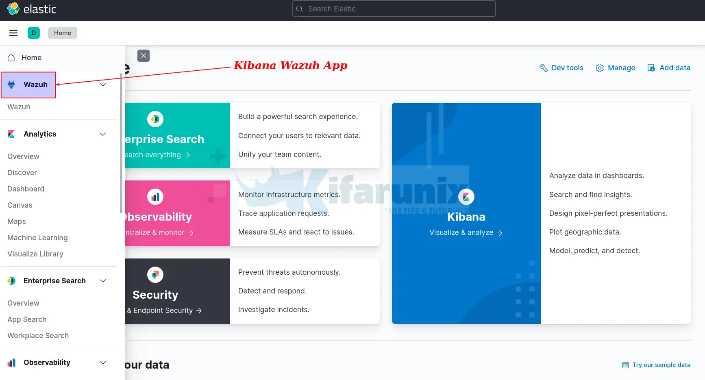
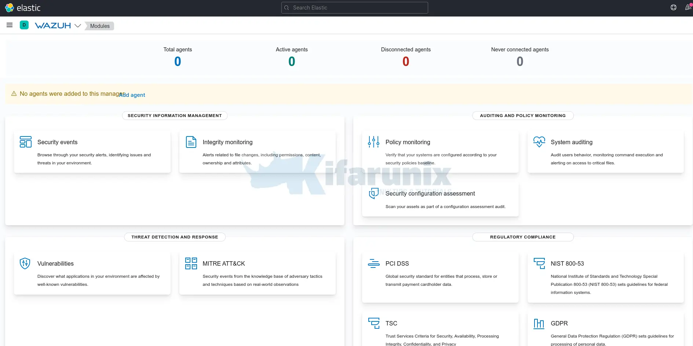
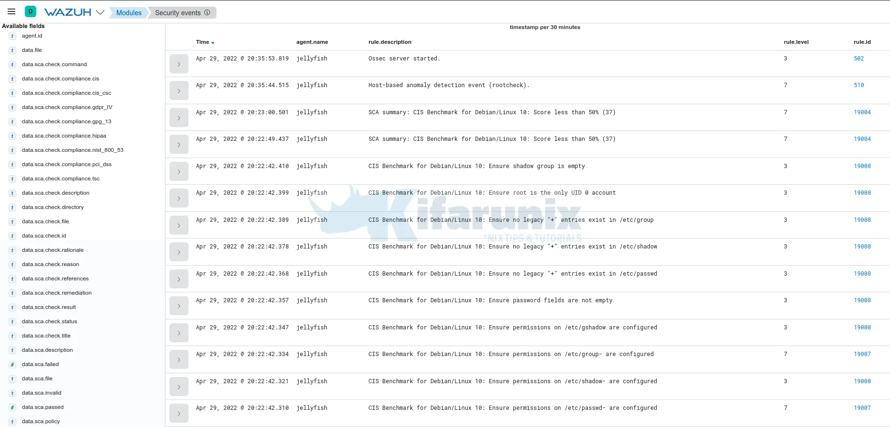

Installing Wazuh
Install and Configure Wazuh Manager on Ubuntu 22.04
In this tutorial, you will learn how to install and configure Wazuh Manager on Ubuntu 22.04. According to the documentation, Wazuh is a free and open source platform for threat detection, security monitoring, incident response and regulatory compliance.
Install and Configure Wazuh Manager on Ubuntu 22.04
Wazuh can be used to monitor endpoints, cloud services and containers, and to aggregate and analyze data from external sources. Wazuh provides the following capabilities:
- Security Analytics
- Intrusion Detection
- Log Data Analysis
- File Integrity Monitoring
- Vulnerability Detection
- Configuration Assessment
- Incident Response
- Regulatory Compliance
- Cloud Security Monitoring
- Containers Security
Install Elastic Stack on Ubuntu 22.04
In order to fully utilize Wazuh manager capabilities and have a nice UI for visualization, Wazuh has to be integrated with Elastic Stack and to be precise, Kibana, for visualization, Elasticsearch, for data storage and search engine, Filebeat for collecting Wazuh manager event data and pushing them to Elasticsearch search engine.
Thus, in order to install and configure Wazuh manager on Ubuntu 22.04, you need to begin by setting up Elastic Stack; Kibana, Elasticsearch and Filebeat.
According to the Wazuh components compatibility matrix page, current stable release versions of Wazuh (v4.2) supports upto ELK 7.14.2 as of this writing.
This should therefore guide us on the version of Elastic stack to deploy.
To install Elastic Stack components on Ubuntu 22.04, proceed as follows.
- Install Elastic Stack APT repositories on Ubuntu 22.04;
wget -qO - https://artifacts.elastic.co/GPG-KEY-elasticsearch \
| sudo gpg --dearmor -o /etc/apt/trusted.gpg.d/elastic.gpg
echo "deb https://artifacts.elastic.co/packages/7.x/apt stable main" \
> /etc/apt/sources.list.d/elastic-7.x.list
apt update- Install Elasticsearch 7.14.2 on Ubuntu 22.04
- Configure Elasticsearch
By default, Elasticsearch should just work with the default settings by default. Feel free to checkImportant Elasticsearch settings.
If Elasticsearch will need to be accessed by other external Beats, then you need to set the IP address and define whether to run in a multi node or single node cluster.
- Start and enable Elasticsearch to run on system boot;
Confirm the Elasticsearch port is opened;
ss -altnp | grep 9200You can check the status;
systemctl status elasticsearchYou can check the logs if need be. By default, the logs are written to /var/log/elasticsearch/CLUSTER_NAME.log, where CLUSTER_NAME is elasticsearch by default. Thus, the default log file is /var/log/elasticsearch/elasticsearch.log.
- Install Kibana 7.14.2 on Ubuntu 22.04
- Configure Kibana
To begin with, set the Kibana server IP address to allow external access. Usually, it only listens on loopback interface.
For example, my server IP address is 192.168.56.124. Thus, to configure Kibana to listen on this host IP address, run the command below (Be sure to change the address as per your setup environment).
sed -i '/server.host:/s/^#//;s/localhost/192.168.56.124/' /etc/kibana/kibana.ymlWe will the other settings with the default values.
- Start and enable Kibana to run on system boot;
Confirm the Kibana port is opened after a short while.
ss -altnp | grep 5601If need be, check syslog and /var/log/kibana/kibana.log log files.
Open Kibana port on firewall;
If using UFW, run;
ufw allow 5601/tcpIf using iptables;
iptables -I INPUT -p tcp --dport 5601 -j ACCEPT iptables-save > /etc/iptables/rules.v4- Install Filebeat on Ubuntu 22.04
Filebeat is required to forward Wazuh manager alerts and archived events to Elasticsearch. You can install version 7.14.2, currently supported by Wazuh as of this writing, using the command below;
apt install filebeat=7.14.2 -yEnable it to run on boot;
systemctl enable filebeatInstall Wazuh Manager on Ubuntu 22.04
Next, proceed to install Wazuh server/manager on Ubuntu 22.04
- Install Wazuh APT Repository on Ubuntu 22.04
Update the package information:
apt updateNext, install Wazuh manager on Ubuntu 22.04.
apt install wazuh-managerOnce the installation is complete, you can start and enable Wazuh-manager to run on system boot;
systemctl enable --now wazuh-managerOpen Wazuh Manager Port on Firewall. Usually, the Wazuh agents is set to communicate with Wazuh manager via TCP port 1514 by default. Thus, open port 1514/tcp on Wazuh manager.
iptables -A INPUT -p tcp --dport 1514 -j ACCEPTOr
ufw allow 1514/tcpAlso, allow port 1515/tcp for agent registration;
iptables -A INPUT -p tcp --dport 1515 -j ACCEPT ufw allow 1515/tcpIntegrate Wazuh Manager with ELK Stack
- Install Wazuh Manager Kibana App plugin
To install Wazuh manager/server Kibana App, proceed as follows;
chown -R kibana: /usr/share/kibana/pluginsEnsure the plugin version to install is compatible with currently installed version of ELK stack as well as the Wazuh manager installed.
sudo -u kibana /usr/share/kibana/bin/kibana-plugin install \ https://packages.wazuh.com/4.x/ui/kibana/wazuh_kibana-4.2.6_7.14.2-1.zipSample output of the installation;
Attempting to transfer from https://packages.wazuh.com/4.x/ui/kibana/wazuh_kibana-4.2.6_7.14.2-1.zip
Transferring 32500452 bytes....................
Transfer complete
Retrieving metadata from plugin archive
Extracting plugin archive
Extraction complete
Plugin installation complete
Create Wazuh Kibana data directory and set the ownership to kibana user.
mkdir /usr/share/kibana/data chown -R kibana: /usr/share/kibana/dataRestart Kibana;
systemctl restart kibana- Configure Filebeat for Wazuh Manager
Make a backup of the default configuration file and replace it with the following configs.
mv /etc/filebeat/filebeat.{yml,stock}cat > /etc/filebeat/filebeat.yml << 'EOL'
output.elasticsearch:
hosts: ["localhost:9200"]
setup.template.json.enabled: true
setup.template.json.path: '/etc/filebeat/wazuh-template.json'
setup.template.json.name: 'wazuh'
setup.ilm.overwrite: true
setup.ilm.enabled: false
filebeat.modules:
- module: wazuh
alerts:
enabled: true
archives:
enabled: false
logging.level: info
logging.to_files: true
logging.files:
path: /var/log/filebeat
name: filebeat
keepfiles: 7
permissions: 0644
EOL
Install Filebeat Wazuh Module:
wget -qO- https://packages.wazuh.com/4.x/filebeat/wazuh-filebeat-0.1.tar.gz \
| tar -xz -C /usr/share/filebeat/module/
Download Wazuh alerts Elasticsearch template:
wget -O /etc/filebeat/wazuh-template.json \
https://raw.githubusercontent.com/wazuh/wazuh/4.2/extensions/elasticsearch/7.x/wazuh-template.json
Test Filebeat config;
filebeat test configConfig OK
Test Filebeat Elasticsearch output;
filebeat test output
- elasticsearch: http://localhost:9200...
- parse url... OK
- connection...
- parse host... OK
- dns lookup... OK
- addresses: 127.0.0.1
- dial up... OK
- TLS... WARN secure connection disabled
- talk to server... OK
- version: 7.14.2
Restart Kibana, Elasticsearch, Filebeat ans Wazuh-manager
The configuration is done!
systemctl restart elasticsearch kibana filebeat wazuh-managerChecking the status of each service;
systemctl status elasticsearch kibana filebeat wazuh-manager● elasticsearch.service - Elasticsearch
Loaded: loaded (/lib/systemd/system/elasticsearch.service; enabled; vendor preset: enabled)
Active: active (running) since Fri 2022-04-29 17:26:54 UTC; 1min 35s ago
Docs: https://www.elastic.co
Main PID: 684 (java)
Tasks: 75 (limit: 4579)
Memory: 2.3G
CPU: 1min 32.471s
CGroup: /system.slice/elasticsearch.service
├─ 684 /usr/share/elasticsearch/jdk/bin/java -Xshare:auto -Des.networkaddress.cache.ttl=60 -Des.networkaddress.cache.negative.ttl=10 -XX:+AlwaysPreTouch -Xss1>
└─1094 /usr/share/elasticsearch/modules/x-pack-ml/platform/linux-x86_64/bin/controller
Apr 29 17:26:35 jellyfish systemd[1]: Starting Elasticsearch...
Apr 29 17:26:54 jellyfish systemd[1]: Started Elasticsearch.
● kibana.service - Kibana
Loaded: loaded (/etc/systemd/system/kibana.service; enabled; vendor preset: enabled)
Active: active (running) since Fri 2022-04-29 17:26:35 UTC; 1min 30s ago
Docs: https://www.elastic.co
Main PID: 690 (node)
Tasks: 18 (limit: 4579)
Memory: 409.3M
CPU: 33.858s
CGroup: /system.slice/kibana.service
├─690 /usr/share/kibana/bin/../node/bin/node /usr/share/kibana/bin/../src/cli/dist --logging.dest=/var/log/kibana/kibana.log --pid.file=/run/kibana/kibana.pid
└─998 /usr/share/kibana/node/bin/node --preserve-symlinks-main --preserve-symlinks /usr/share/kibana/src/cli/dist --logging.dest=/var/log/kibana/kibana.log --≶
Apr 29 17:26:35 jellyfish systemd[1]: Started Kibana.
● filebeat.service - Filebeat sends log files to Logstash or directly to Elasticsearch.
Loaded: loaded (/lib/systemd/system/filebeat.service; enabled; vendor preset: enabled)
Active: active (running) since Fri 2022-04-29 17:26:37 UTC; 1min 20s ago
Docs: https://www.elastic.co/beats/filebeat
Main PID: 976 (filebeat)
Tasks: 8 (limit: 4579)
Memory: 37.6M
CPU: 873ms
CGroup: /system.slice/filebeat.service
└─976 /usr/share/filebeat/bin/filebeat --environment systemd -c /etc/filebeat/filebeat.yml --path.home /usr/share/filebeat --path.config /etc/filebeat --path.>
Apr 29 17:26:37 jellyfish systemd[1]: Started Filebeat sends log files to Logstash or directly to Elasticsearch..
● wazuh-manager.service - Wazuh manager
Loaded: loaded (/lib/systemd/system/wazuh-manager.service; enabled; vendor preset: enabled)
Active: active (running) since Fri 2022-04-29 17:35:48 UTC; 51s ago
Process: 1517 ExecStart=/usr/bin/env /var/ossec/bin/wazuh-control start (code=exited, status=0/SUCCESS)
Tasks: 118 (limit: 4579)
Memory: 478.6M
CPU: 33.061s
CGroup: /system.slice/wazuh-manager.service
├─1579 /var/ossec/framework/python/bin/python3 /var/ossec/api/scripts/wazuh-apid.py
├─1621 /var/ossec/bin/wazuh-authd
├─1640 /var/ossec/bin/wazuh-db
├─1663 /var/ossec/bin/wazuh-execd
├─1677 /var/ossec/bin/wazuh-analysisd
├─1729 /var/ossec/bin/wazuh-syscheckd
├─1744 /var/ossec/bin/wazuh-remoted
├─1756 /var/ossec/bin/wazuh-logcollector
├─1796 /var/ossec/bin/wazuh-monitord
└─1814 /var/ossec/bin/wazuh-modulesd
Apr 29 17:35:38 jellyfish env[1517]: Started wazuh-db...
Apr 29 17:35:39 jellyfish env[1517]: Started wazuh-execd...
Apr 29 17:35:40 jellyfish env[1517]: Started wazuh-analysisd...
Apr 29 17:35:41 jellyfish env[1517]: Started wazuh-syscheckd...
Apr 29 17:35:42 jellyfish env[1517]: Started wazuh-remoted...
Apr 29 17:35:43 jellyfish env[1517]: Started wazuh-logcollector...
Apr 29 17:35:44 jellyfish env[1517]: Started wazuh-monitord...
Apr 29 17:35:46 jellyfish env[1517]: Started wazuh-modulesd...
Apr 29 17:35:48 jellyfish env[1517]: Completed.
Apr 29 17:35:48 jellyfish systemd[1]: Started Wazuh manager.
Accessing Kibana Web Interface
You can now access Kibana via the url http://
On the UI, click Explore on my own and under the Kibana menu section, you should be able to see Wazuh App.
When you click on the APP, you should see such dashboard.
No agents are connected by default. However, there should be some default events already collected from the Wazuh manager.
For example head over to Security events > Events;
